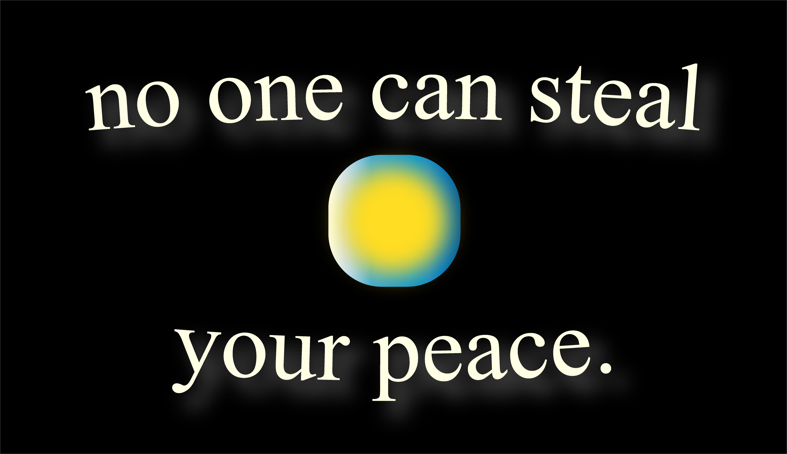

as humans, we naturally tend to do what is easiest. naturally
even loved ones dissappear from our lives leaving gaping holes behind.
sometimes our lives feel like they’ve been taken from us altogether—having been seemingly destroyed by one event or another.
but no one can steal your peace. that’s something that nobody but you can ever touch.
remember that.